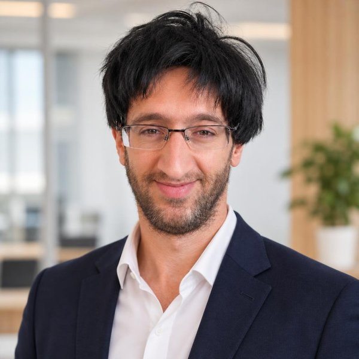
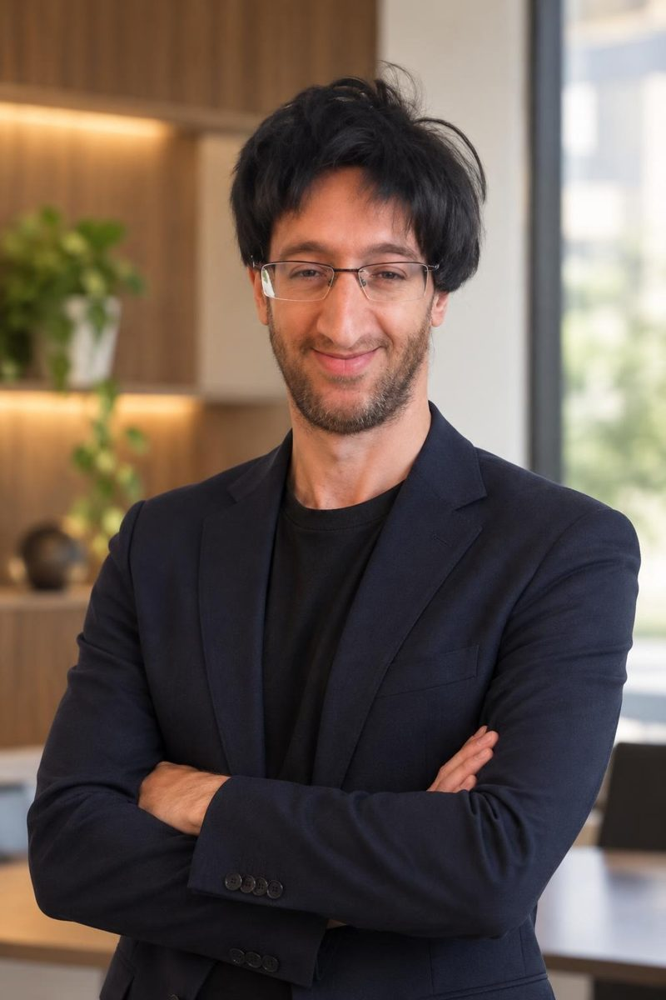

AI Strategy & Roadmap
אסטרטגיית AI ומפת דרכים
גיבוש כיוון אסטרטגי שמחבר בין יעדי הארגון, הזדמנויות AI וסדרי העדיפויות של ההנהלה.
- הגדרת חזון ויעדים עסקיים
- תעדוף Use Cases
- בניית Roadmap לקבלת החלטות
אנחנו מלווים הנהלות וארגוני Enterprise בגיבוש אסטרטגיית AI, במיפוי הזדמנויות ובבניית הבסיס לארכיטקטורה שנועדה לצמוח.
Trusted by leadership teams at
AI הוא כבר לא שאלה טכנולוגית בלבד. הוא נוגע למבנה הארגון, לתהליכי קבלת ההחלטות וליכולת ההנהלה להגדיר לאן היא רוצה להגיע.
KSA GROUP היא פירמת Advisory בוטיק המבוססת בישראל ופועלת בזירה הבינלאומית. אנחנו עובדים עם הנהלות, דירקטוריונים וצוותי Enterprise כדי להפוך מורכבות לכיוון אסטרטגי ברור.

ארבעה שלבים. מסגרת אחת. מבט שלם על הדרך מהשאלה העסקית ועד מוכנות ל-Scale.
מתחילים בהקשבה. מגדירים את האתגרים, מזהים Stakeholders ומבינים מה הארגון מבקש להשיג.
ממפים Use Cases, תהליכים, מידע ותלויות. בוחנים הזדמנויות לצד מגבלות וסיכונים.
מגבשים ארכיטקטורת יעד, עקרונות Governance ו-Roadmap שמחברים בין הצורך העסקי לאפשרויות הטכנולוגיות.
מגדירים סדרי עדיפויות, מדדי הצלחה ומנגנוני בקרה לקראת הרחבה אחראית ברחבי הארגון.
ייעוץ אסטרטגי להנהלות שמבקשות להתקדם ב-AI מתוך בהירות, אחריות וראייה ארוכת טווח.
אסטרטגיית AI ומפת דרכים
גיבוש כיוון אסטרטגי שמחבר בין יעדי הארגון, הזדמנויות AI וסדרי העדיפויות של ההנהלה.
סדנאות Discovery
תהליך הדגל שלנו ליצירת Alignment בין Stakeholders ולהבנת הצורך לפני בחירת הפתרון.
ייעוץ לארכיטקטורת Multi-Agent
בחינת ארכיטקטורות AI מתקדמות בהתאם ל-Use Cases, לסביבת הארגון ולרמת המוכנות שלו.
ממשל ובקרות AI
הגדרת עקרונות לניהול אחראי של מערכות AI בסביבה ארגונית מורכבת.
תדריכי AI להנהלות ולדירקטוריונים
תמונת מצב ממוקדת למקבלי החלטות. ההזדמנויות, הסיכונים והשאלות שדורשות תשומת לב הנהלתית.
תוכניות טרנספורמציה ארגונית
ליווי הנהלות בתכנון השינוי הארגוני הנדרש כדי להפוך יוזמות AI לחלק מתפיסה רחבה ועקבית.
לפני שבוחרים ארכיטקטורה או מגדירים POC, יוצרים הבנה משותפת של מה שהמערכת צריכה לעשות ושל הערך שהיא נדרשת לייצר.

הערך האמיתי של AI לא מתחיל בטכנולוגיה. הוא מתחיל ביכולת של הנהלה לשאול מה נכון לארגון שלה.
רונן קפלן הוא המייסד וה-Managing Partner של KSA GROUP. הוא מלווה הנהלות בכירות ודירקטוריונים בצומתי החלטה אסטרטגיים סביב AI וטרנספורמציה ארגונית.
גישתו מחברת בין שיח עסקי, חשיבה ארכיטקטונית והיכרות עם הדרישות של ארגוני Enterprise. הוא מוביל באופן אישי את הדיאלוג עם לקוחות הפירמה ואת תהליכי ה-Discovery המרכזיים.
לצדו פועל צוות ייעוץ ממוקד, בשיתוף מומחים ושותפים חיצוניים בהתאם לצורכי כל התקשרות. הניסיון שנצבר בעבודה עם ארגונים גדולים ובינלאומיים מאפשר לפירמה להביא פרספקטיבה רחבה לכל דיון.
מבחר תחומי פעילות עם ארגונים גדולים בישראל ובעולם. שמות הלקוחות אינם מפורסמים מתוך מחויבות לדיסקרטיות.
ליווי הנהלה בגיבוש סדרי עדיפויות ל-AI וביצירת Alignment בין יחידות עסקיות, טכנולוגיה וגורמי סיכון.
מיפוי צרכים ו-Use Cases לגישה לידע מבוזר, לצד בחינת עקרונות לארכיטקטורת RAG.
ייעוץ לארכיטקטורת יעד עבור תהליכים מרובי Stakeholders, עם דגש על orchestration ו-Human in the Loop.
גיבוש עקרונות Governance ודיון הנהלתי בסיכונים, באחריות ובתעדוף יוזמות AI.
רונן הצליח לחבר בין השאלות העסקיות לבין דיון ארכיטקטוני שההנהלה כולה יכלה לקבל בו החלטות.
תהליך ה-Discovery יצר שפה משותפת בין גורמים שהגיעו עם הנחות שונות מאוד לגבי מה שנדרש.
קיבלנו מסגרת ברורה לתעדוף ולדיון בסיכונים. זו הייתה נקודת פתיחה חשובה עבור הדירקטוריון.
מאמרים של רונן קפלן על אסטרטגיית AI, על Discovery ועל השאלות שעל שולחן ההנהלה.
איך תהליך Discovery חושף הנחות, תלויות וצרכים שלא תמיד עולים בתחילת יוזמת AI.
לקריאה ←גם בשלב מוקדם, החלטות על מידע, Governance, Guardrails ו-Scale מעצבות את האפשרויות בהמשך.
לקריאה ←מתי ארכיטקטורה מרובת Agents עשויה להתאים לארגון, ואילו שאלות נכון לברר לפני שבוחרים בה.
לקריאה ←לרוב בין שבועיים לארבעה שבועות. משך התהליך נקבע בהתאם להיקף, למספר ה-Stakeholders ולמורכבות השאלות שיש לברר.
KSA GROUP מתמקדת באסטרטגיה, בייעוץ ובארכיטקטורה. ההטמעה מתבצעת על ידי צוותי הלקוח או שותפים מטעמו.
מומלץ להגיע עם תיאור ראשוני של האתגר, מטרות עסקיות ככל שהוגדרו ורשימת Stakeholders רלוונטיים. אין צורך להגיע עם פתרון או עם Use Cases סופיים.
לא. בחירת הגישה תלויה בצורך. במסגרת התהליך נבחן חלופות כגון RAG, Multi-Agent, Vision, OCR או Fine-Tuning, ככל שהן רלוונטיות ל-Use Cases.
התדריכים מיועדים לדירקטוריונים, להנהלות בכירות ולבעלי תפקידים שמבקשים להבין את המשמעויות העסקיות והארגוניות של AI ולקבל החלטות מושכלות.
ספרו לנו על האתגר, על ההזדמנות או על השאלה שנמצאת על שולחן ההנהלה.